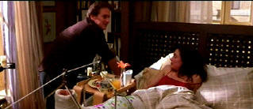

|
Don't Say a Word (SE)/ C+, A |
|
Fox/2001/113/ANA 2.35 |
Just when you think this is just another ransom
thriller you realize it's just another ransom thriller that isn't quite up
to the standards of its many predecessors. The chief assets of Don't Say
a Word are the slick look and good pacing.
Don't Say a Word starts off with promise in
another genre. The opening heist is well-executed. By choosing an
desaturated look for the prologue, it's almost as if director Gary Fleder wanted to
go for black and white. It's very effective in separating parts of the
movie.
 |
| The start
of a miserable day. ©Fox |
The real movie starts ten years after the heist
when Dr. Nathan Conrad is pulled into a case he doesn't want and then is
forced to unravel the psychological mystery and play action hero is the
short span of a couple of days.
There's something that seems by-the-numbers
about the film. Perhaps its that the film is devoid of honest emotion. It's
like a perfectly composed plastic plate of would-be gourmet cuisine. There
are significant breeches in logic. Timings are not always reasonable.
Certainly, the showdown is barely worthy, taking logic and burying it deeper
than any body in Potter's Field. There are some inconsistencies of behavior like the way
Nathan drives to the hospital when he doesn't want to be stopped by the
police. Other plot points perhaps can be justified, but they are stretched. By-play between
Doctors Conrad and Sachs at the
hospital plays with an extra dose of dishonestly given the circumstances of Douglas's
arrival. Tension is often promoted artificially. The situation has its own
natural tension and no cinematic cheating is necessary. Why use camera
angles or a beat of the sound track to stir up the audience.
Michael Douglas is credible enough as Dr. Nathan Conrad,
but he doesn't go much beyond going through the motions, and Sean Bean can
play villain with his eyes shut these days. Brittany Murphy gets a few good
scenes as the psychiatric patient with the key to the mystery. I'm a
big Famke Janssen fan, but she asked to distort the already thin fabric of
credibility beyond reason as Nathan's wife Aggie. She fights the good fight,
but it was lots more fun in Goldeneye. Oliver Platt get the
impossible role of Conrad's colleague Dr. Louis Sachs.
Director Gary Fleder keeps Don't Say a Word moving
at an effective pace. The rhythm of his cutting works well. His
visual sensibilities are admirable. But he seems satisfied with Swiss cheese
plotting.
One thing for sure. After seeing Don't Say a
Word, I'm not going to screw around with my psychiatrist: when he says
$200 an hour, I'm paying him!.
The word here is that this transfer for Don't Say a
Word is outstanding. Resolution is maxed to striking effect. The
razor-sharp images are never edgy. Consistency of the transfer is terrific.
Even a very tough pan across a brick building maintains perfect
artifact-free stability. Contrast range packs maximum
punch in the image and depth is excellent. Black levels are lush. Shadow detail is revealing. The wide color range captures it's palette
with panache. Interesting lighting schemes are beautifully captured. Night
lighting at the scene of the crime replicated an appropriately garish
atmosphere. Good pans on the DTS surround sound. Overall directionality is
very good. The music has effective force.
Excellent material on the special edition including a
nine shot analysis of a scene. It gives you a great idea of how a finished
scene is composed. There's a short interview session with produces Arnold
and Ann Kopelson in which they basically talk up there job. A Brittany
Murphy screen test is a fine example of why she was cast. The commentaries
are put together in a very logical fashion. Director Gary Fleder provides a
full length observations on one track and on a second track actors Michael
Douglas, Sean Bean, Famke Janssen Brittany Murphy, and Oliver Platt add
their specific scene observations with direct access to each one from the feature menu.
Reviewed on a Sharp 9000VX DLP Projector
|
|
|
|
 Selections from the Feature
Archive include articles on Akira Kurosawa, Frank Darabont, Blonde Bimbos, Hollywood Street Gangs, or Vietnam: The Hollywood Pariah, and many more.... Selections from the Feature
Archive include articles on Akira Kurosawa, Frank Darabont, Blonde Bimbos, Hollywood Street Gangs, or Vietnam: The Hollywood Pariah, and many more....

Click on the image of The Heistmasters for an
interesting feature on the tough guys that pull off the big jobs.

The Movie Poster Archive
includes extensive poster images from the films of stars like Susan Hayward,
Kirk Douglas, Katharine Hepburn and many more. Our featured star is Kirk Douglas.

City of Industry/B+,B+

A heist delivered in simple strokes and sudden fury. Harvey
Keitel is relentless.


The AV Science Forum provides great feedback on the latest home
theater equipment with a wide range of opinions. Outstanding home theater
resource.

An on-line Home Theater magazine with excellent hardware reviews, including
thorough and responsible research. Check it out.
 The Cinematheque is a cultural,
arts organization that programs year-round specialty film series at the
newly renovated, landmark 1922 Egyptian Theatre on
Hollywood Boulevard! The Cinematheque is a cultural,
arts organization that programs year-round specialty film series at the
newly renovated, landmark 1922 Egyptian Theatre on
Hollywood Boulevard!

DVD Demystified makes it all clear. The official Internet DVD FAQ
for the rec.video.dvd Usenet newsgroups.
|